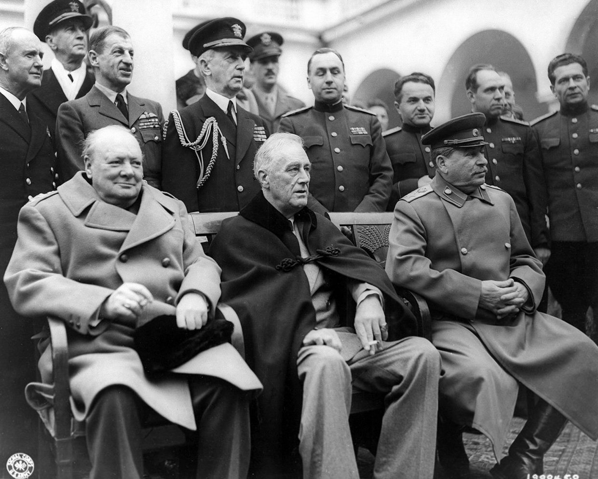

Liberalisation
When World War II had a foreseeable end, the big three (Churchill, Rosevelt, Stalin) were already discussing what to do with Germany after they would surrender. At the Yalta Conference they were defining what to do with Germany, how to treat Germany once it was finally beaten.
They agreed they would separate Germany but left open what exactly that meant. Churchill feared complete separation could weaken the European economy.
Their united goal was to end war as quickly as possible and the denazification of Germany.
Furthermore, Stalin’s goals were for the Eastern European counties to be recognised as part of the USSR. Rosevelt tried getting Stalin to help against Japan and getting him to agree to join the UN. He was successful. Russia joined the fight against Japan. Churchill's goal was to bring democracy to european states which were not democratic at the time.
By U. S. Signal Corps - Library of Congress , Franklin D. Roosevelt Library & Museum, Gemeinfrei, Link
Hitler killed himself, the paper for unconditional surrender were signed by Generaloberst Alfred Jodl who was assigned to negotiate the surrender for the western forces on May 7th, on May 8th it was put into action.
Stalin demanded a separate signature on USSR controlled ground which was signed by Wilhelm Keitel on May 9th in Berlin-Karlshorst.
May 23rd the successor of Hitler Karl Dönitz and his government were arrested, leaving Germany without a Nazi government. Germany had been liberated.
The “Berlin Declaration” on June 5th gives control to the allied forces and separates Germany as well as Berlin into four sectors.
Continue reading: